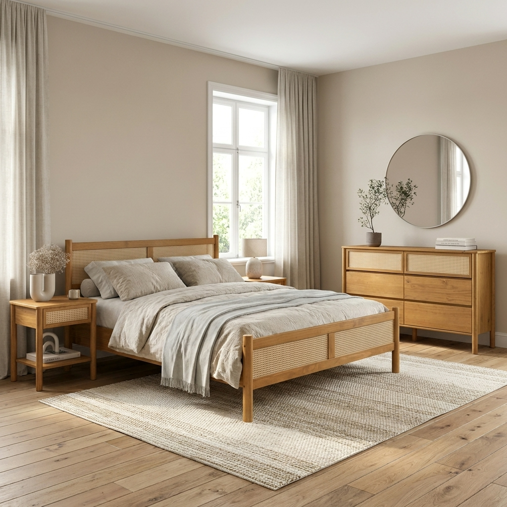
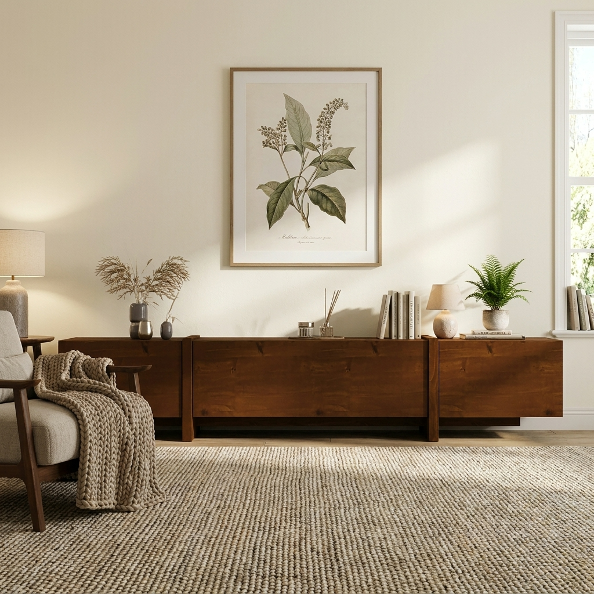
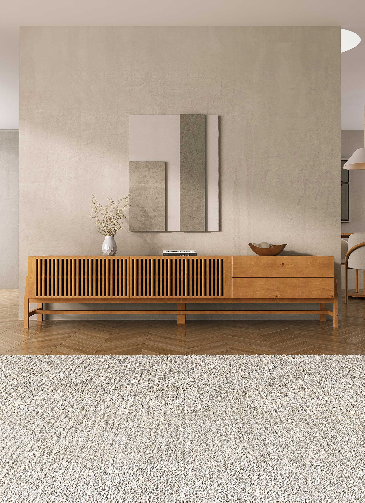
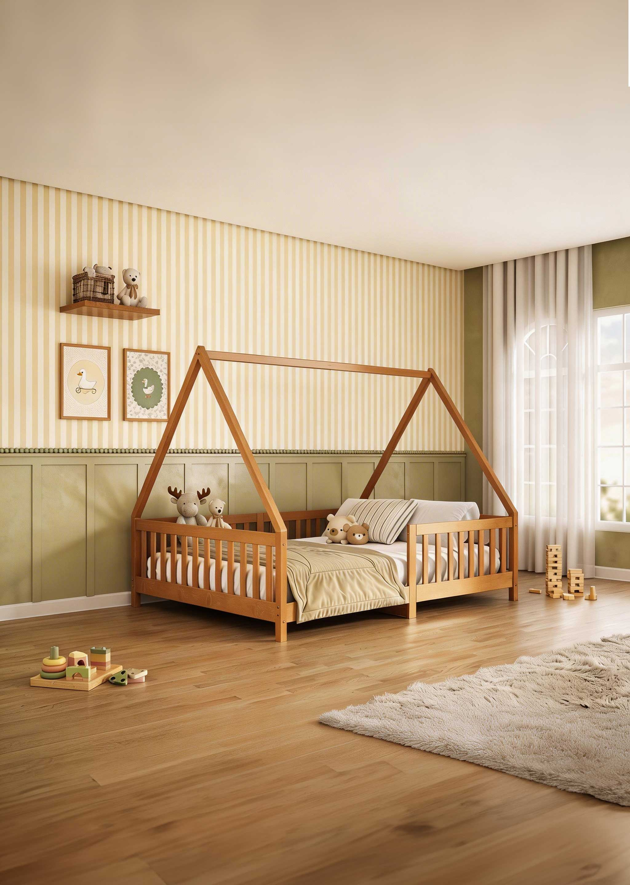

Guia de inspirações para o lar e conteúdos sobre madeira, design e tendências.
Feito de madeira.
Feito para durar.
Inspirações, guias e ideias para criar ambientes acolhedores, funcionais e cheios de significado com móveis de madeira.
Escolha por onde começar
O que você quer planejar hoje?
Encontre conteúdos para escolher melhor, entender materiais, comparar opções e transformar cada ambiente com mais segurança.

Guia de compra · Madeira maciça
Como escolher móveis de madeira maciça para sua casa
Entenda material, proporção, acabamento e durabilidade antes de decidir quais peças fazem sentido para o seu ambiente.
Continuar lendo
Madeira maciça · Cuidados
Madeira maciça de pinus: entenda resistência, durabilidade e cuidados
Um guia direto para conhecer melhor o pinus, suas características e os cuidados que ajudam o móvel a permanecer bonito.
Continuar lendo
Medidas · Compra online
Como medir o ambiente antes de comprar um móvel online
Veja como observar circulação, parede, portas, tomadas e proporções para comprar com mais segurança e menos improviso.
Continuar lendo
Quarto adulto · Organização
Como escolher uma cômoda para quarto adulto
Uma leitura para comparar tamanho, gavetas, função e presença visual antes de escolher uma cômoda para o quarto.
Continuar lendo
Sala de estar · Funcionalidade
Como escolher um rack para sala de TV
Altura, comprimento, armazenamento e composição: os pontos que deixam a sala mais equilibrada e funcional.
Continuar lendo
Montessori · Quarto infantil
Quarto Montessori: como criar um ambiente seguro e funcional
Ideias para pensar autonomia, segurança, circulação e escolhas de móveis em um quarto infantil mais acolhedor.
Continuar lendoConteúdos essenciais
Conteúdos essenciais para escolher com segurança
Comece pelos guias mais importantes para entender materiais, medidas, ambientes e decisões que fazem diferença na compra de um móvel.
Como escolher móveis de madeira maciça para sua casa
Madeira maciça de pinus: entenda resistência, durabilidade e cuidados
Como medir o ambiente antes de comprar um móvel online